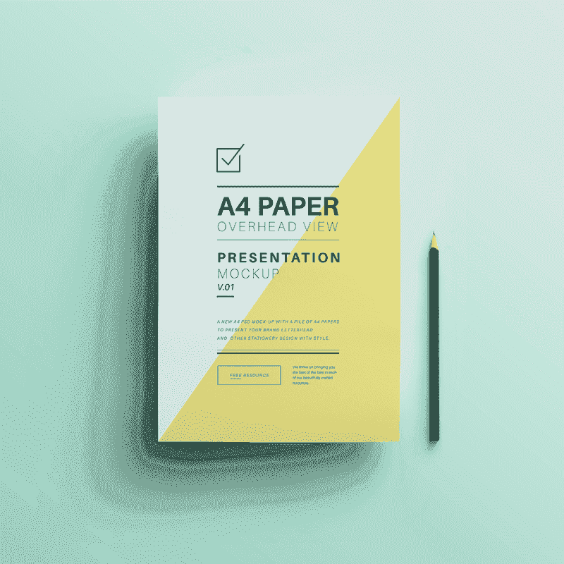
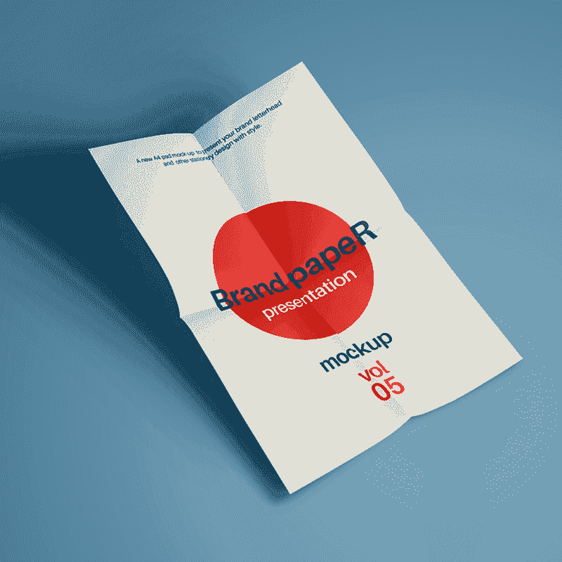

Hello
Translation is an important medium for cultural transfer. With the help of translation practice, indigenous culture absorbs and integrates the content of foreign cultures, enriching itself with new connotations. Also, the information in the source culture is transmitted and added values in the target culture through the bridge function of translation.
—— Liqiong Chen
| Name | : | Liqiong Chen |
| Phone | : | 0421 622-209 |
| : | 1006016108@qq.com | |
| Address | : | UNIT55 15 ABERDEEN ST PE RTH WA 6000 |
| Link | : | https://www.linkedin.com/in/liqiongchen |
Work
As for myself, I am quite proficient in Chinese and good at writing, and I have a passion for studying
the beauty of words and expressions, so enjoy being immersed in the world of translation.
With a bachelor degree in public finance, I have deep understandings of the fields of finance, trade and
taxation, which lead me to excel at translating economic texts.
At present, I have translated numerous news reports in both Chinese and English, covering the
areas of
technology, health care and education. Additionally, I used to be engaged in the translation of the
notarial certificate of household registration.
-

-

-
-
-

-
Employement
Every man's work, whether it be literature of music of pictures or architecture of anything else, is always a portrait of himself.
—— Samuel Brtler
-
June 2018 - July 2019
Tutor ( Internship )
ZhongDao Training Institution
Zhongshan City, Guangdong Province, China
— Be responsible for the explanation of Chinese and English questions; To guide students to think about deeper problems;
— Organize weekend training classes to improve students' grades and cultivate their divergent thinking. -
Nov. 2016 - Mar. 2018
Tutor ( Part - time Work )
Joy Art Training Center
Guangzhou, China
— Answer students' questions about different courses, check their homework and correct the mistakes;
— Teach students good learning methods and pay attention to the cultivation of their manners;
— Maintain a harmonious teacher-student relationship and have responsibility as well as patience for students.
-
Sep. 2014 - Sep. 2016
The Chinese Soldier
The Chinese People's Liberation Army
Haikou City, China
— Through more than three months of hard fitness training, the physical performance reached to an excellent level;
— Served as a telephone operator, worked conscientiously and successfully completed various tasks assigned by the superior;
— Actively participated in the cultural construction of the army and was praised by the battalion commander many times.
Skills and Languages
No matter what line, all need to be professional skills. The genius always should be accompanied by the kind of directed and uninterrupted practice of a goal oriented, without this, and even the most fortunate to be, will disappear without a trace.
—— Delacroix
Education
Knowledge changes fate, so I firmly believe that the educational experiences and overseas study will definitely benefit my future career development.
-
2013 — 2019
Guangdong University of Finance and Economics
Bachelor of Economics
I achieved good grades in crucial subjects and possessed deep understandings in the fields of economy as well as taxation. During the academic years, I won the honor of "Merit Student" and the third-class scholarship.
-
2020 — 2021
University of Western Australia
Master of Arts in Translation
I have systematically studied the relevant contents of major, specializing in Chinese-English translation, and also insist on the habit of reading plenty of books to broaden horizon. My solid professional foundation and abundant extra-curricular knowledge have greatly enhanced the quality of translation.
“ Translation ethics is the basis of translation behaviors, and translators can make corresponding translation decisions under its edification. Meanwhile, translation moralities can be reflected through the translation between the lines and the application of translation strategies. ”
Liqiong Chen
“ Translating consists in reproducing in the receptor language the closest natural equivalent of the source language message, first in terms of meaning, and secondly in terms of style. ”
Eugene A. Nida & Charles R. Taber
“ What is translation? Often, though not by any means always, it is rendering the meaning of a text into another language in the way that author intended in the text. ”
Peter Newmark
Blog
Let oneself feast for the eyes is a kind of attitude to life and a kind of ability.
09/12/2013
Starting a new life in college
I picked up my bags and ran away to meet my college days, while high school life dwindled to a small point behind me.
09/13/2014
Green Flower in the Army
I joined the Chinese People's Liberation Army and became a soldier. Two years of the army life has trained my hard-working, independent and brave character.

11/10/2018
Interesting translation experience
I worked as a volunteer translator at the 2018 Guangzhou Economic Expo, made some foreign friends and expanded my social circle.
05/10/2019
Graduation Season
The days of the struggle in university are the most memorable. College is an important milestone in life, and graduation means that we have to choose another way to move forward.
11/30/2021
Completing my postgraduate studies
How time flies! Two years of translation learning has made me more professional and ambitious, which gives me great confidence for my future employment.
08/06/2019
The new life in Australia
I finally realized my dream of studying abroad and was full of curiosity about all the new things in Australia.
Contact
Social network is essential for employment, which may help us obtain more job information and resources. If you wish to further communicate with me, please leave your message or email.